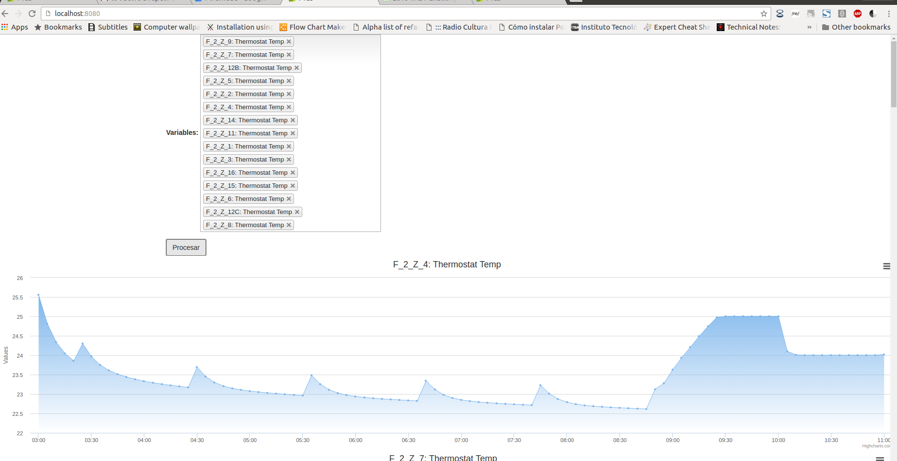
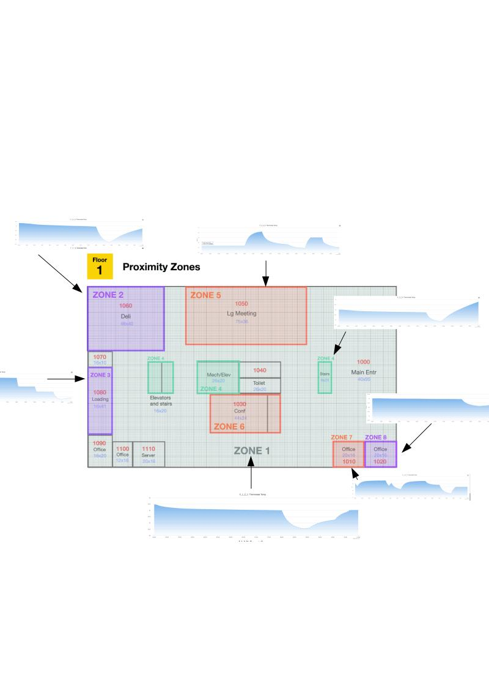
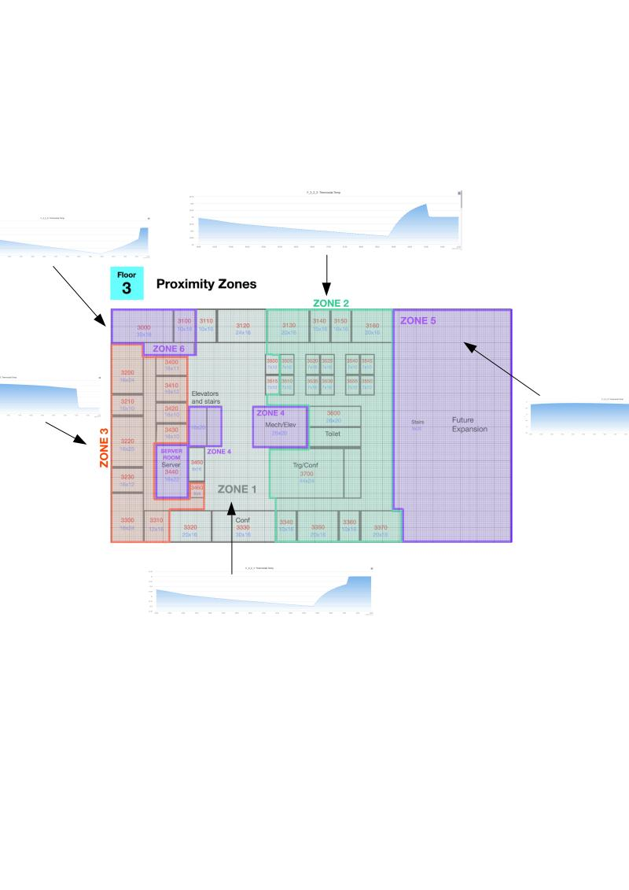
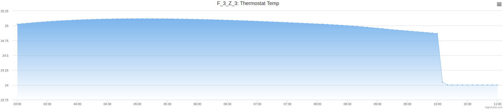
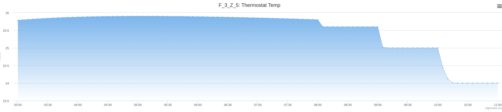
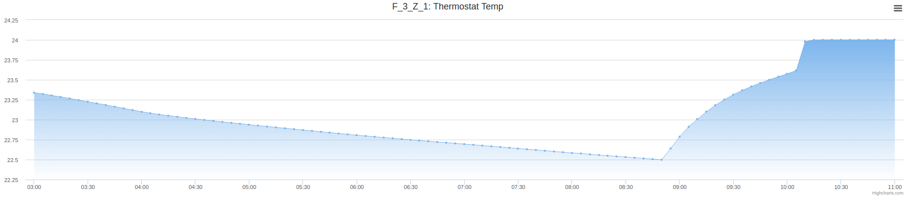
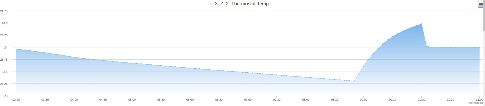
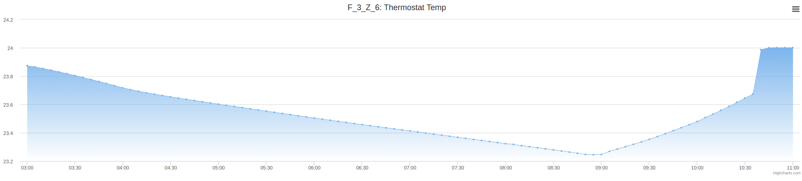

Elegí observar los valores consumidos en relación al termostato. Se analizaron los tres pisos.
El challenge fue implementado mediante una aplicación web que consumia el stream con un proceso batch y mostraba la información mediante renderizacion de datos en el cliente.

Abajo muestro los pisos y sus zonas donde encontramos anomalias


En el primer piso las zonas 7 y 8 son vecinas, sin embargo presentan valores muy distintos.
En el primer piso la zona 5 se comporta muy distinto al resto de las zonas.
No encontré nada fuera de los normal en el segundo piso.
En el tercer piso se puede observar dos grupos de zonas térmicas. El grupo uno contiene las zonas 3 y 5, y el grupo dos contiene el resto de las zonas.
Habría que agregar un sensor en la zona 6 del primer piso porque queda un área central sin medir. Además la información de esta zona podría parecerse a la de la zona 5, la cual parece tener cierto aislamiento con respecto a la zona 1 que la contiene.
El grupo témico uno perece comportarce en forma complementaria al grupo térmico dos. Esto es curioso porque las zonas que componen al grupo uno no son vecinas. Al parecer comparten las mismas variables de entorno.





Básicamente usamos la interpolación y el promedio de los dotos que tenemos como estrategia.